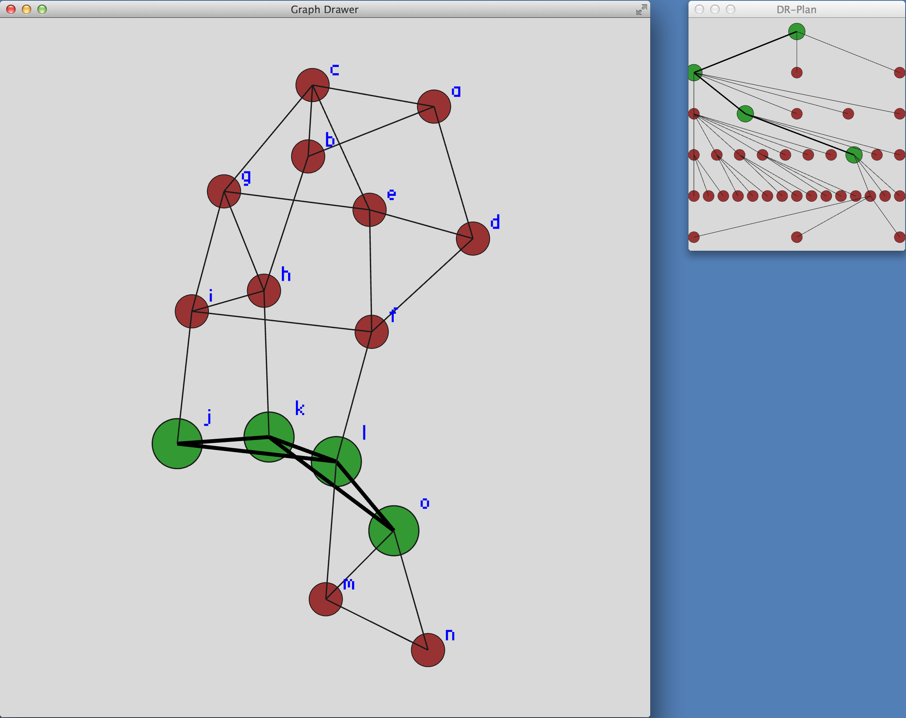
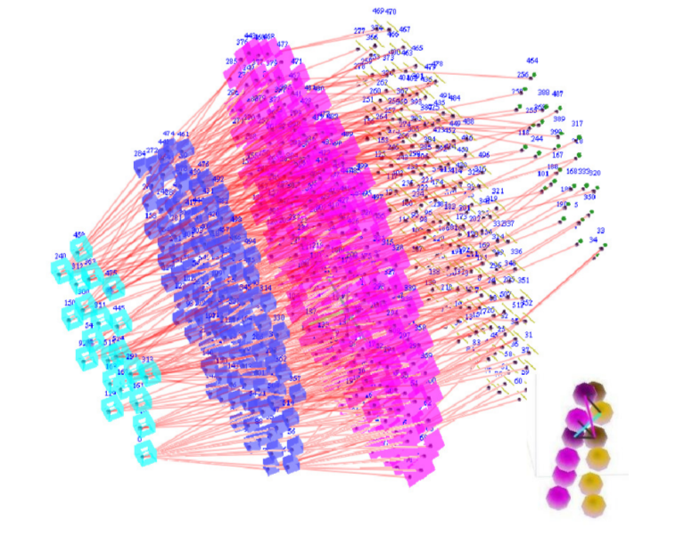
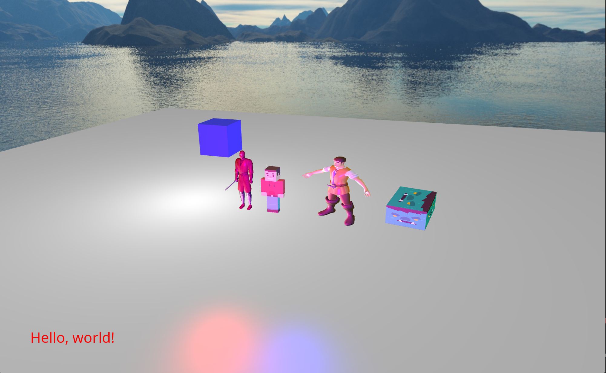
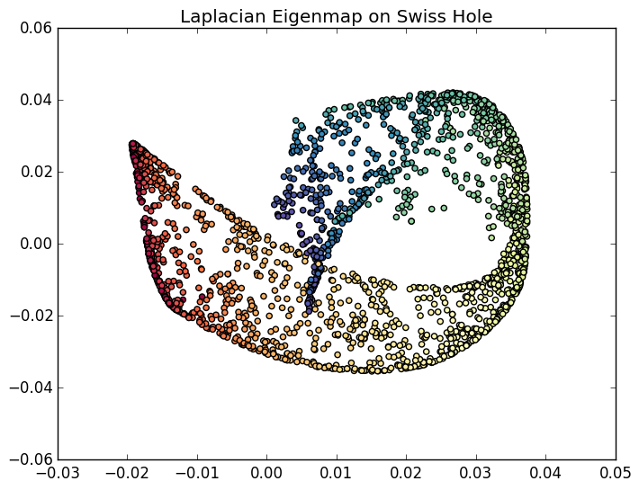

Troy A. Baker
Master's in Computer Science

Doctoral Research
DR-Planner & OMD Solver

Doctoral Research
EASAL

Hobby Project
Game Engine

Hobby Project
LolCupid

School Project
Machine Learning Project

Hobby Project
Personal Homepage